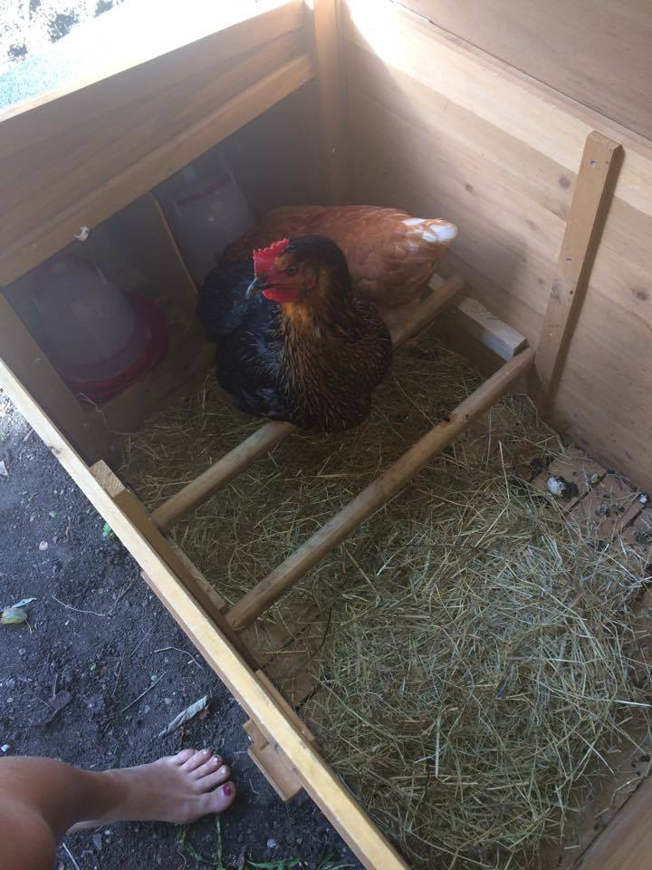
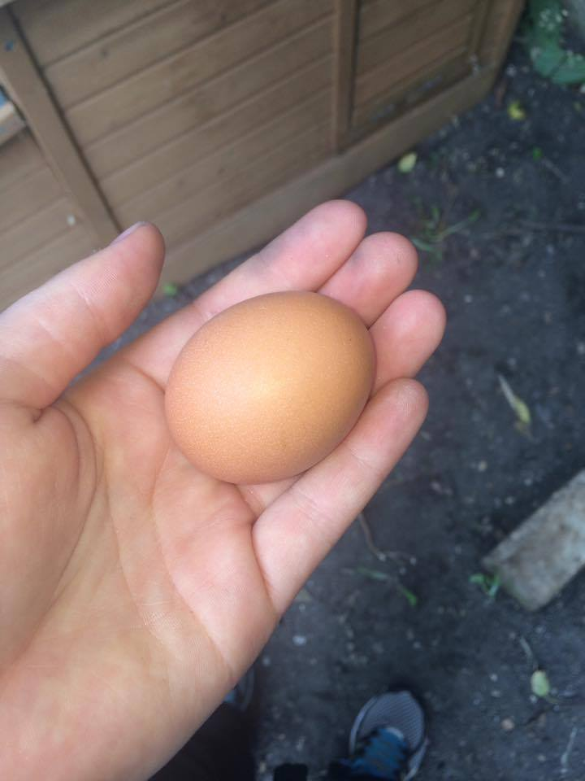
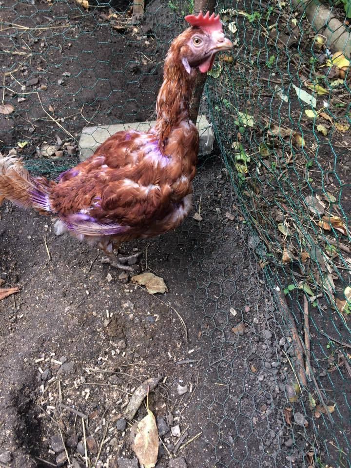

Hen Welfare
There have been various consultations with The British Hen Welfare Trust from where the 2 rescued chickens were collected.
Advice for any budding chicken owners.
Meet the Squad
Margaret Hatcher aka Maggie
22A Chicken Diaries
The Flock
This is the place for your weekly updtaes on the 22A hens. Read on to find out the latest on Cluck, Maggie, Jimmy and Joe.
Squad Profiles
Cluck Norris:
Cluck is the black swan of the bunch but very much in a good way, her feathers are beautiful. Originally thought to be the alpha, Cluck takes her place in the middle of the pecking order, but the Cluck and Mags gang is a formidable force in the coop. Wherever Mags goes, Cluck won't be far behind. The inseperable pair were friends from the egg.
Maggie Hatcher: aka Mags
Mags is the firm favourite in the house, although recently found to be the resident bully of Chicken Joe, she has an inquisitive attitude and her inseperable bond with Cluck is heartwarming. The isolation of Mags was the final and most successful technique in integrating Joe into the group properly, without this, she was surely a gonner.
Hen Welfare
There have been various consultations with The British Hen Welfare Trust from where the 2 rescued chickens were collected. THe integration of the two new chickens into the already established friendship of Cluck and Mags took its time. Various isolation methods of different chickens were carried out and Joe was ruthlessly pecked until finally, two months later, they are living in relative harmony.
22A Diaries
15/09/2016: Then hens have arrived
 A hired mini van was required to bring the first two dreamy hens in their coop from their old home with Jenny who was leaving Cambridge
16/09/2016: We have an egg!
 The first egg was laid in their brand new home!
22/09/2016: Peace Disturbed
The 22nd September saw a long drive into rural Essex and the British Hen Welfare Trust. IT was not known what was awaiting the unsuspecting fiat punto as it pulled into the farm. No one is quite sure what happened next but 2 hours later 22A had 2 new, rather dishevveled residents: Jimmy and Joe had arrived, and the troubles began.
01/10/2016: Feathers
Joe has sprouted feathers!!!
03/10/2016: Purple chickens
Heeding advice from TBHWT, the battery chickens have been sprayed purple in an attempt to inhibit the plucking of their protein rich sprouting feathers. 
04/10/2016: Plucking hell!
Mags the bully has plucked out all of Joe's new feathers. Apparently new feathers are full of protein and delicious to other chickens